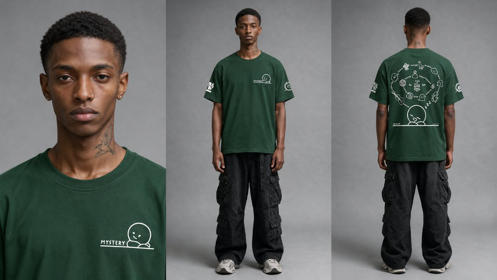
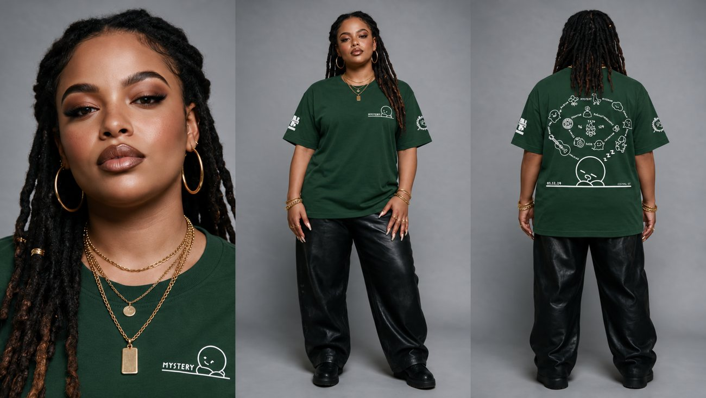
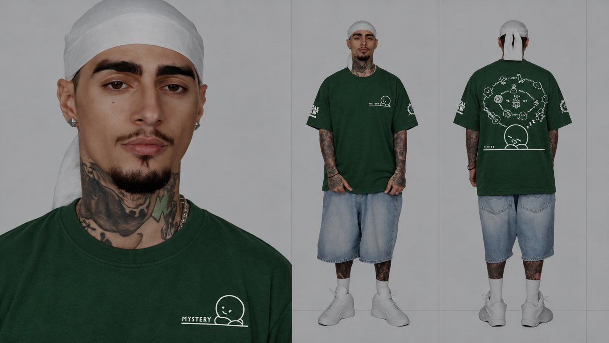
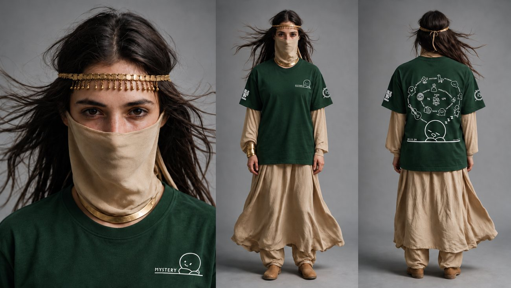
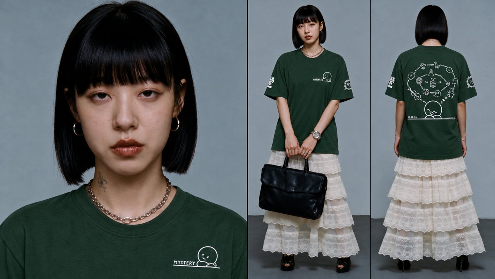

AI Fashion / Concept 001
One T-Shirt.
A Whole New Campaign.
How I made an AI fashion film with GPT-generated models, product photos, a reference video and Higgsfield.
VIDEO + 5 GPT MODEL IMAGES + PROMPTVIDEO DOWNLOAD
Download the finished fashion film
Download the finished AI fashion film.
Download finished video ↓Original reference video: not included yet. This download is the AI-generated result, not the original reference clip.
01 / THE SETUP
3 simple steps.
Here’s the workflow I used.
01
Create models with ChatGPT
Generate 5 model images wearing the exact T-shirt. Keep the front, back, colors and logos accurate.
02
Upload to Higgsfield
Upload the reference video and these 5 ChatGPT-generated model images in this exact order:





03
Paste the prompt
Match Image 1–5 to the right people, paste the prompt below, and generate.
Video = shots & motion. Images = models & outfits. Prompt = consistency.
02 / COPY & CREATE
Copy my full prompt.
Use the same image order (Image 1–5) as shown in the prompt.
Create a 30-second realistic fashion film edit based on the uploaded video. REFERENCE PRIORITY - Use the uploaded video as the strict reference for the full story, shot order, timing, actions, gestures, camera movement, framing, locations, lighting, background activity, props, and hard cuts. - Use each newly generated model reference image as the strict reference for the matching model’s face, hair, skin tone, body proportions, accessories, outfit layers, and T-shirt design. Match each model image to the corresponding person in the video and keep that identity consistent across all their shots. - Reference images control the model’s appearance and clothing only. Do not copy their studio backgrounds, poses, or lighting into the video. - Replace only the original football-jersey wearers with their matching generated models. Keep all other people in the video as they are. MODEL REFERENCE MAPPING - Image 1: the male T-shirt wearer in the desert/car scenes. Preserve his face, short hair, neck tattoo, and black cargo trousers. - Image 2: the woman T-shirt wearer in the reception scenes. Preserve her locs, facial features, gold hoop earrings, jewelry, and black trousers. - Image 3: the male T-shirt wearer in the rooftop scenes. Preserve his white durag, facial hair, neck and arm tattoos, and denim shorts. - Image 4: the veiled woman T-shirt wearer in the traffic/horse scenes. Preserve her long dark hair, gold forehead chain, beige face veil, jewelry, and beige outfit. - Image 5: the woman T-shirt wearer in the office scenes. Preserve her black bob with bangs, facial features, jewelry, white layered lace skirt, and handbag. Use each image only for the matching wearer listed above. Keep each model’s identity consistent in every shot where that person appears. Do not swap identities between Image 1, Image 2, Image 3, Image 4, or Image 5. Do not transfer one model’s face, hairstyle, body, or accessories to another. GARMENT The featured garment is the exact forest-green relaxed-fit cotton crew-neck T-shirt shown in the generated model references. Preserve its color, crew collar, relaxed fit, sleeve length, and hip-length hem. Reproduce the artwork faithfully: - Front: small white line-art character and “MYSTERY” on the wearer’s left chest. - Sleeves: preserve the white printed graphics on both sleeves. - Back: preserve the complete white doodle arrangement, central graphics, large sleeping character near the lower back, horizontal line, and date “01.12.24”. Keep the graphics in the same positions and scale as the reference shirt. Let the print follow natural fabric folds. Do not mirror, invent, remove, or rearrange any artwork. Preserve any non-shirt clothing layers and accessories shown in that model’s reference image. VIDEO ACTION AND EDIT Keep the original 25-shot sequence and its timing from 0–28 seconds, followed by a 2-second static end card. Preserve the video’s original actions and story, including the desert, reception, rooftop, traffic, and office scenes. Keep every model’s original action, pose, gaze, movement, and screen position. Preserve the existing handheld camera movement and hard cuts. Do not add transitions, new shots, or new actions. Keep the background extras and their activity consistent with the source video. LOOK AND SOUND Keep the original Super 8-inspired film texture, natural motion blur, grain, lighting, color grade, locations, and sound design. The forest-green T-shirt should remain the featured product color, with its white print clearly visible. Maintain realistic fabric movement and stable model identity throughout the video. END CARD Remove the old HIGGS logo and all old HIGGS jersey graphics. End on a static pure-black card with no text, logo, watermark, or animation. CONSTRAINTS Do not leave any original black-and-lime jersey on a featured wearer. Do not add football jersey details, V-necks, neon piping, HIGGS lettering, 246, 001, or 54. Do not change the video’s setting, action, timing, or camera work. Do not replace background people. No captions, new branding, or floating graphics.